Git Basics Workshop
1 Intro
About me
- Tibor Stanko, 34 years
- since 2020 Data Engineer in Zurich Insurance, Bratislava 🇸🇰
- before that, 6 years in academia in 🇫🇷 (PhD, postdoc)
- I enjoy automating boring tasks using Python 🐍
- not a Git guru, but I’ve been using Git daily for over 10 years
- my hobbies: 👨👩👧👦🚲⛰️🎸🎹🍺
Contents of this workshop
2 Git & Github
What is Git?
- version control system (VCS) or source control management (SCM)
- in Slovak: systém riadenia verzií
- keeps track of project development history
- useful for teams and for individuals
- not only about code, enables saving arbitrary files (including non-text)
Why do we need version control systems
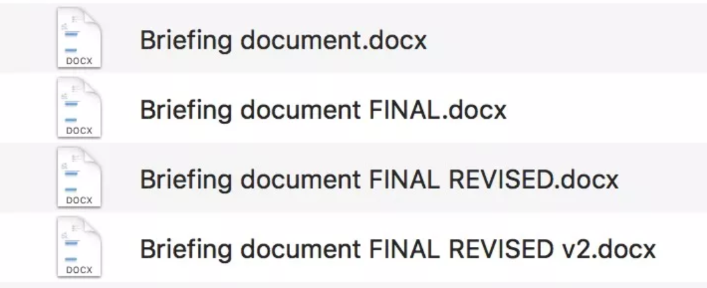Why do we need version control systems
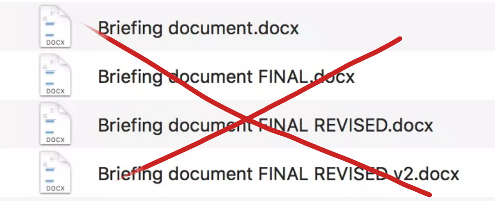What can you do with Git?
- save versions
- switch between versions
- restore a previous version
- compare versions
- create branches
- merge branches
- back up files
What is Github?
- “social network for programmers”
- Git = version control system
- Github = portal for maintaining repositories
- uses Git, but is not a part of Git
- has functionality beyond Git
- Issues, Pull requests, Actions, …
- similar services: Gitlab, Bitbucket, Azure DevOps, etc.
3 Basic Git Concepts
Step 0: Working with the terminal
- In order to understand how Git works, we will start by using Git through the terminal
- Later on, we will also show how to use Git directly in an IDE (e.g. VS Code)
- On Windows, I recommend Windows Terminal with PowerShell (built-in) or Nushell
- Basic commands for navigating between directories in the terminal:
pwd— print the current directorycd folder— change the current directory tofolderdir— list contents of the current directory
Step 1: Installing Git
- There are several ways to install Git on Windows, for example:
- using the classic installer
- using scoop (recommended) — run the following commands in PowerShell:
Step 2: Configuring Git
- Check if Git is installed correctly:
- Before we start working with Git, we need to set our name and email using the
git configcommand. Git will use these details to assign version authorship.
git config --global user.name "Tibor Stanko"
git config --global user.email "tibor.stanko@gmail.com"- Set the default branch to
main(we will talk more about branches later)
Step 3: Creating a Git repository
- Navigate to the directory where we want to create the repository:
- The
git initcommand is used to create a Git repository in the current directory:
- After running the command, Git will output:
Step 3: Creating a Git repository
- We can check the status of the repository using
git status:
- This is what an empty Git repository looks like (no files or saved versions):
Step 4: Saving a version
Saving a version involves two steps.
- Use
git addto mark changes that should be added to the new version:
- Use
git committo create a record of the new version:
Step 4: Saving a version
- The commit message is usually a short, one-line description specified with the
-m "commit message"argument. - If you want to write a longer description, omit the
-margument.git commitwill then open a text editor where you can write the description. - In Git on Windows, the default editor for writing commit messages is
vim, which runs directly in the terminal. If you are not familiar with usingvim, you can change the editor:
Step 4: Saving a version
Don’t slack off when writing commit messages!
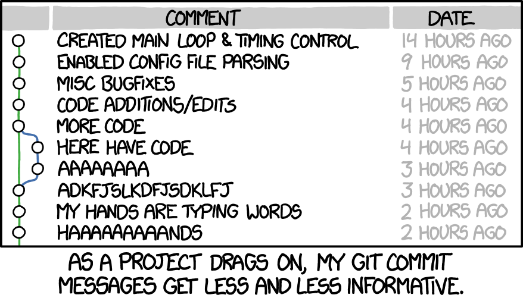
Why do we save a version in two steps?
Some version control systems work by creating a new version from all the current files in the repository. This method of saving backups can be inefficient. For example, if we have implemented two independent features in the repository and we want to capture them in two separate versions. Therefore, Git introduces the concept of the staging area, which allows us to control which changes will be included in the next version.
Step 5: Checking the status of the repository
- We can check the current status of the repository using
git status:
- We can use the
git logcommand to verify that a commit was created:
Unstaging a file
- Use
git reset [file]to unstage a file while retaining changes in the working directory
Unstaging a file
- Use
git reset [file]to unstage a file while retaining changes in the working directory
Exercises (1)
- Create an empty directory
zooon your computer. - Turn the
zoodirectory into a Git repository. - In the repository, create a file
test.txtwith any content. - Add
test.txtto the next version and save it. - Check the new version using
git log.
Tip: don’t forget to use git status while working to see the current status of the repository.
4 Branches
What is a branch?
Branches allow us to deviate from the main line and continue working without interfering with it
Branching is a strong feature of Git — switching between branches is fast, which allows for frequent creation of new branches
So far, we have been working on the
mainbranch, which was automatically created bygit initWe can see a list of branches using the
git branchcommand:
The default Git branch used to be master. Due to its negative connotations, this name is gradually being phased out. Therefore, when configuring Git, we changed init.defaultBranch to main.
What are branches good for?
- Branches allow us to work efficiently in parallel on multiple parts of the project
- For example, when we are developing a new feature (branch A) and a bug needs to be fixed immediately (branch B)
- Thanks to Git, work on these two branches can proceed independently
rewrite/improve second bullet
Creating a branch
- To create a new branch called
french, we call:
- If we want to switch to the new branch:
- These two operations are often done together, so there is a shortcut:
Merging branches
- If we want to add changes made on the
slovakbranch to the mainmainbranch, we first switch to the main branch:
- We use the
git mergecommand to merge branches:
Merging branches
Auto-merge
- If possible, Git will automatically merge the changes from both branches. In that case, we will see the following output:
Merging branches
Fast-forward
- If the merged branch is a direct descendant of the target branch, Git will do a so-called fast-forward:
Merging branches
Resolving conflicts
- If automatic merging fails, Git will report a merge conflict in the output. In this case, changes from both branches must be merged manually.
>> git merge french
Auto-merging hello.py
CONFLICT (content): Merge conflict in hello.py
Automatic merge failed; fix conflicts and then commit the result.- After manually merging, it is necessary to add the modified files to the new version:
Deleting a branch
- If we no longer need a branch after merging it, we can delete it using
git branch --delete, orgit branch -dfor short.
After deletion, the branch is removed from history and cannot be restored.
Example git log history
add mermaid diagram for this git log output
Exercises (2)
- Switch to a new branch
animalsin your local repository. - Create a new file
zoo.txtin the repository with the following content:
- Save a new version that will contain
zoo.txt. - Merge changes made on the
animalsbranch into themainbranch and delete theanimalsbranch. - On a new
tigerbranch, change thelevline totigerand save a new version. - Switch to the
mainbranch, fix thezirafaline tožirafa, and save a new version. - Merge changes from the
tigerbranch into themainbranch.
5 Remote Repositories
What is a remote repository?
So far, we have been working with a local Git repository that is stored on our computer
A remote repository is stored on the Internet — more precisely, on a web server
e.g. github.com, corporate server, university server, …
- There are two types of remote repositories:
- public repository is shared with all users who have access to the server
- private repository is shared only with selected users
What are remote repositories used for?
- Backup of code
- Sharing of code
- Synchronization of code in a team
Creating a repository on GitHub — github.com/new
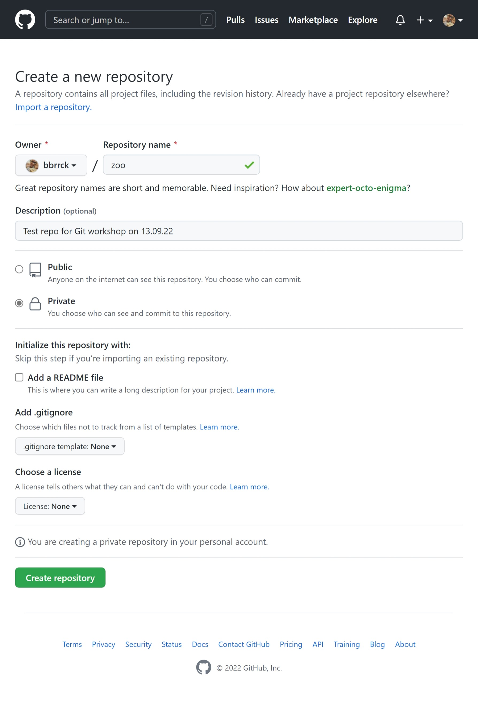
Creating a repository on GitHub — github.com/new
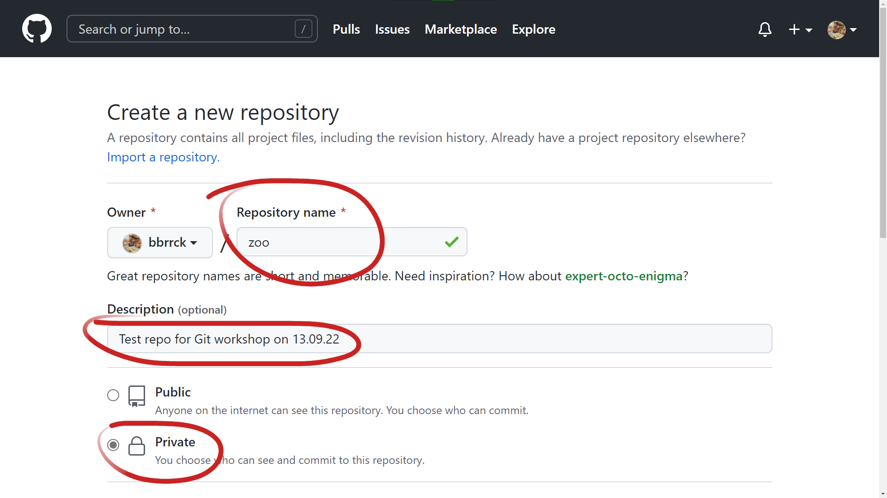
Creating a repository on GitHub — github.com/new
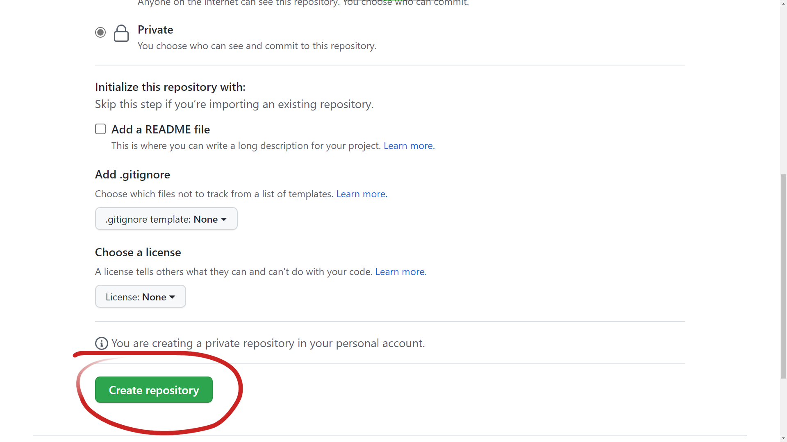
Creating a repository on GitHub — github.com/new
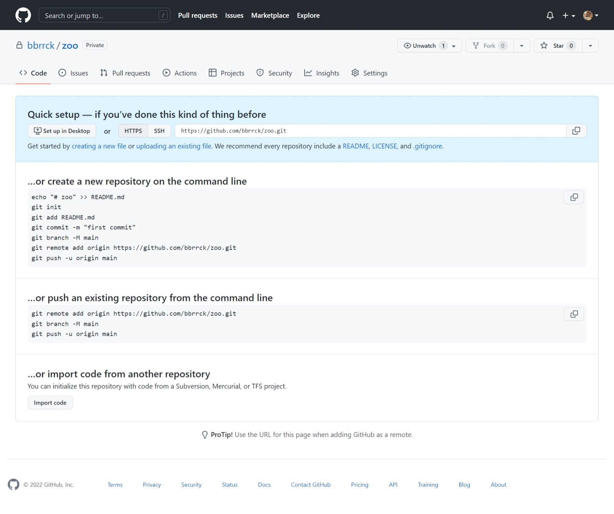
Creating a repository on GitHub — github.com/new
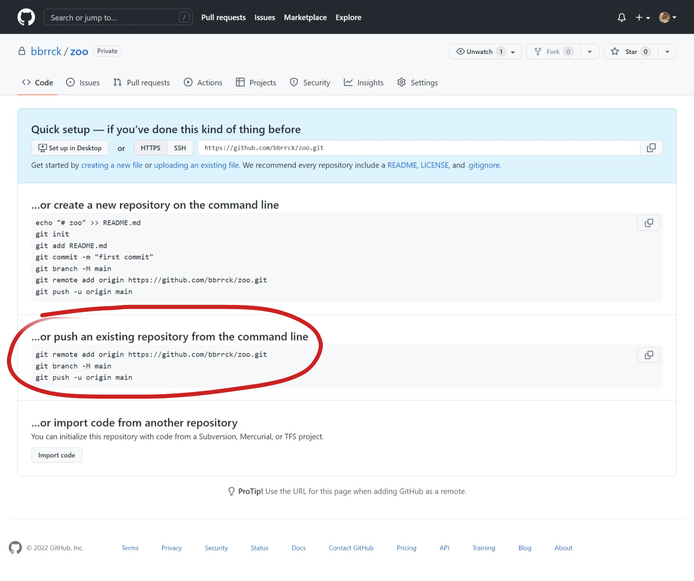
Setting up a remote in the local repository
- We use the
git remote add <name> <url>command to set up a remote repository:
nameis used by Git as the name of the remote repository aturl. The name can be anything; the nameoriginis commonly used.- A local repository can have more than one remote assigned.
Sending a local copy to a remote
- The
git push <remote> <branch>command “pushes” local changes from thebranchbranch to the remote repositoryremote:
- When calling
git pushfor the first time, you need to add the-uargument:
-uor--set-upstreamsets the default remote branch (origin/main) for the current local branch (main)if the remote branch
origin/maindoes not exist,git pushwill create it automatically
Example output from git push
- Output:
Side note: logging in to GitHub
- To allow Git to send data to GitHub, authentication is required
- The easiest way to manage credentials: Git Credential Manager
(it is included in Git for Windows) - Configuration starts automatically after the first
git pushis run
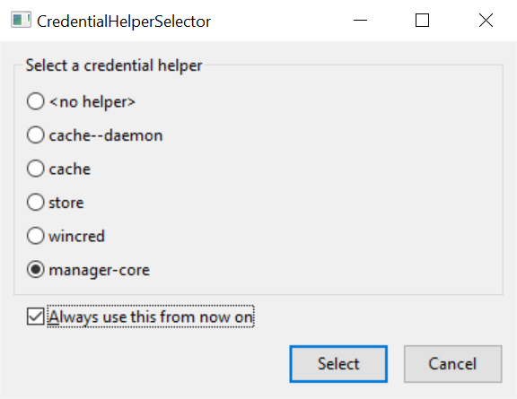
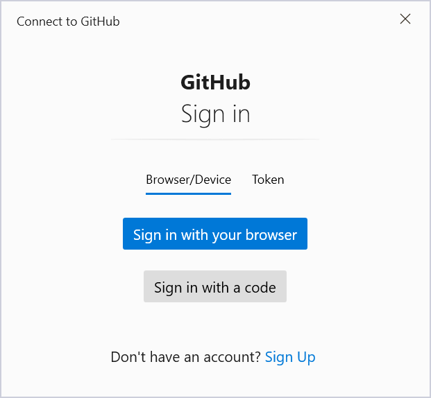
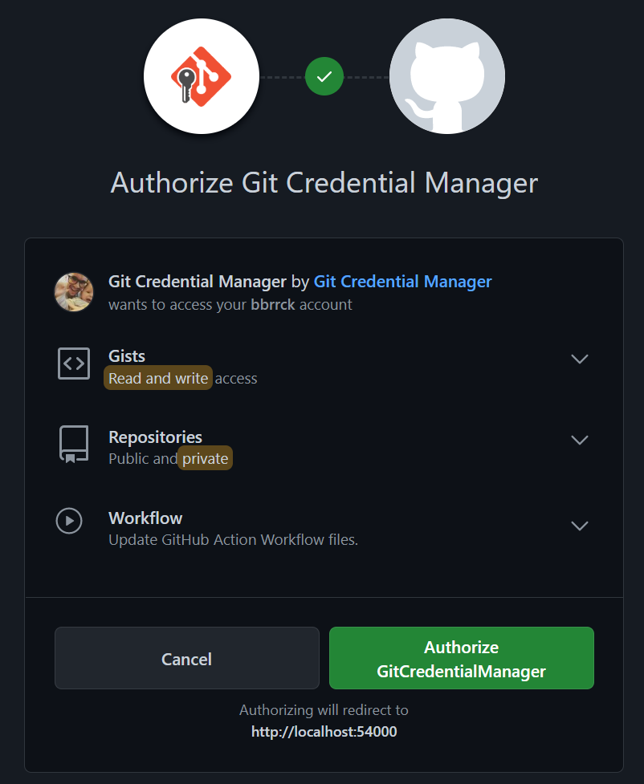
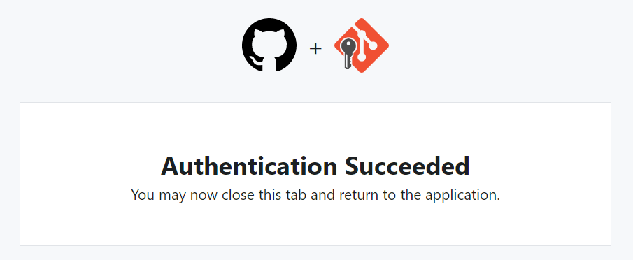
List of branches
git branch -alists all branches, both local and remote-ais short for--all
- Output —
*indicates the current branch:
Conflict: remote changes don’t exist locally
To https://github.com/bbrrck/zoo.git
! [rejected] main -> main (fetch first)
error: failed to push some refs to 'https://github.com/bbrrck/zoo.git'
hint: Updates were rejected because the remote contains work that you do
hint: not have locally. This is usually caused by another repository pushing
hint: to the same ref. You may want to first integrate the remote changes
hint: (e.g., 'git pull ...') before pushing again.
hint: See the 'Note about fast-forwards' in 'git push --help' for details.Fetching remote changes into a local branch
- Use the
git fetchcommand to fetch the list of changes from the remote branch:
- Merge the changes that are not part of the local branch using
git merge:
- In most cases, you can simply use the
git pullcommand, which is a combination ofgit fetchandgit merge:
Cloning an existing remote repository
- You can clone an existing remote repository using
git clone:
- This command creates a copy of the repository from
remote_urlin thelocal_folderdirectory - Example:
Exercises (3)
- Create a repository on Github with the name
zoo. - Add this remote to your local repository.
- Push the local
mainbranch to the remote. - On Github, add an emoji for each animal in the
zoo.txtfile: 🐼🐘🐯🦒. - Synchronize your local repository with Github.
- On Github, add a new line
krokodíl 🐊to thezoo.txtfile and save a new version. - In your local repository, add a new line
gorila 🦍tozoo.txtand save a new version. - Synchronize your local repository with Github and resolve any resulting merge conflicts.
6 Advanced Git
.gitignore
- specifies which files Git should ignore
- .gitignore generator
git <command> --help
git diff
git cat-file -p
git restore
git add --interactive
git log
git stash
git blame
git revert
The git revert command creates a new version, and does not modify the history of the repository.
git reset
The git reset command modifies the history of the repository and can cause file loss.
7 Markdown Crash Course
What is Markdown?
- Markdown is a lightweight markup language (like HTML or TeX) used to create various types of content: documents, articles, slides, web pages, …
- Markdown is the de facto standard for documenting Git projects
- Most Github projects have a
README.mdfile that Github automatically renders - Examples of well-written
READMEfiles: matiassingers/awesome-readme
Even these slides were created using Markdown! (with the help of the Quarto system)
# Markdown is Awesome Markdown is very simple and versatile. This is a Markdown paragraph. This is still the same paragraph. ## Formatting options Bulleted list: - *italic* - **bold** - ***bold and italic*** - ~~strikethrough~~ - [link](https://www.markdownguide.org/) - `code` Numbered list: 1. first item 2. second item 3. last item
Markdown is Awesome
Markdown is very simple and versatile.
This is a Markdown paragraph. This is still the same paragraph.
Formatting options
Bulleted list:
- italic
- bold
- bold and italic
strikethrough- link
code
Numbered list:
- first item
- second item
- last item
### Code blocks
```python
def main():
print("hello!")
if __name__ == "__main__":
main()
```
### Images

### Blockquotes
> It’s worth remembering that it is often the small steps, not the giant leaps, that bring about the most lasting change.

8 Useful Resources
Links
sk
- video course by Yablko: Git a Github od základov
- video course on the Informatika s Mišom channel
- course Základy softvérového inžinierstva at FEI TUKE
- part 2: Systémy pre správu verzií
- part 3: Práca s vetvami v systéme Git
Links
en
- Git cheat sheet
- Pro Git, freely available official book, also available in Czech
- git - the simple guide
- Git tutorials from Atlassian
- Coursera: Introduction to Git and GitHub
- Missing Semester of CS Education, Lecture 6: Version Control (git)
- Learn how Git works internally with simple diagrams
- Markdown Guide
- Learn Markdown in 5 minutes
Git Glossary
| en | sk |
|---|---|
| branch | vetva |
| clone | naklonovanie repozitára |
| commit | záznam |
| commit message | popis záznamu |
| conflict | konflikt medzi verziami |
| conflict resolution | riešenie konfliktov |
| diff | rozdiel medzi verziami |
| merge | zlúčenie vetiev |
| en | sk |
|---|---|
| pull | stiahnutie vzdialených zmien |
| push | odoslanie lokálnych zmien |
| repository | repozitár, úložisko |
| remote | vzdialený repozitár |
| snapshot | snímka |
| staging area | prípravná oblasť (tiež index) |
| status | stav repozitára |
| version | verzia |